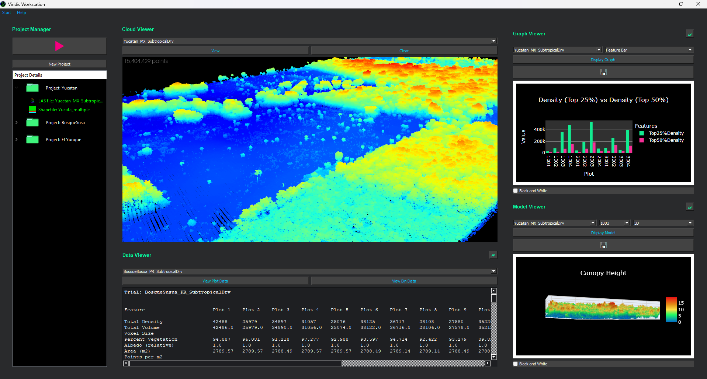
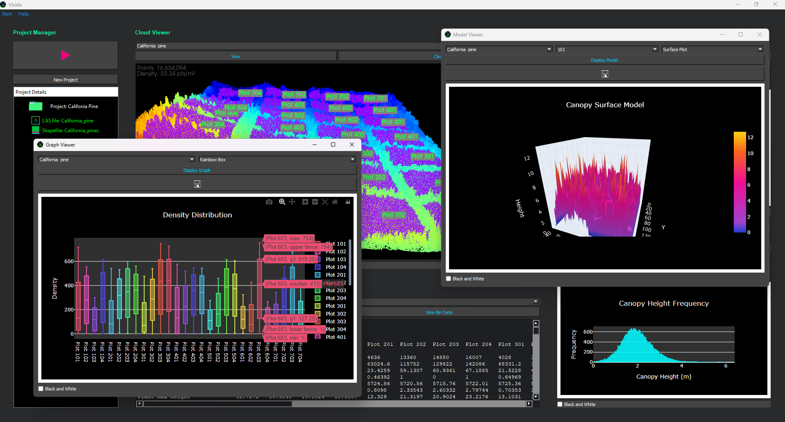

Overview
Viridis is an automated software system for ecological and agricultural monitoring, designed to process LiDAR LAS files and shapefiles to extract vegetation features using custom or preset environmental parameters. With its intuitive interface, users can easily visualize and analyze data, concentrating on interpretation rather than manual tasks.
Features
- Intuitive, user-friendly interface for easy 3D visualizations of LiDAR data
- Automated processing and feature extraction
- Custom or preset environmental parameters
- Streamlined reporting of binned and plot-level data
- In-program data visualization
Screenshots

